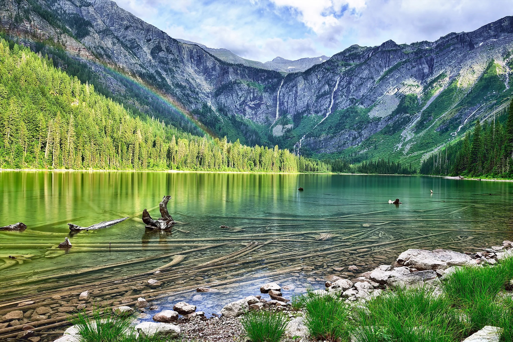
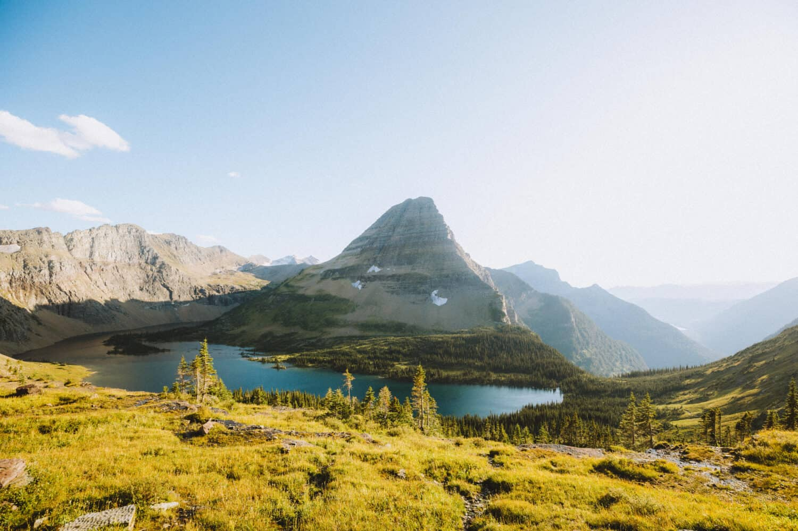
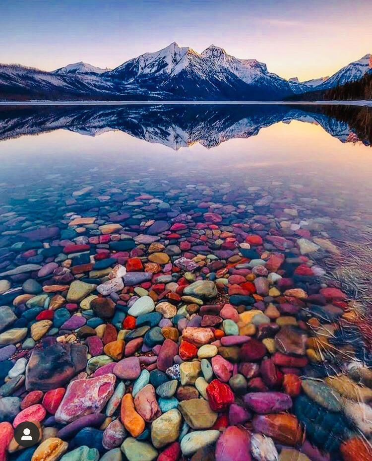

History
Known as the Backbone of the World to the Blackfeet Nation, the rugged landscape
of Glacier attracted the attention of the
Great Northern Railway in the early 1890s.
Though the railroad was
simply seeking a route to the West Coast, its president saw in
the rugged, alp-like landscape the potential for tourism.
Vist These Lakes...
Avalanche Lake, Hidden Lake, and Lake Mcdonald are some of the most popular
destiniation in Glacier. Their scenic views are unmatched and are such to
create a memorable experience. Start planning your trip today!


